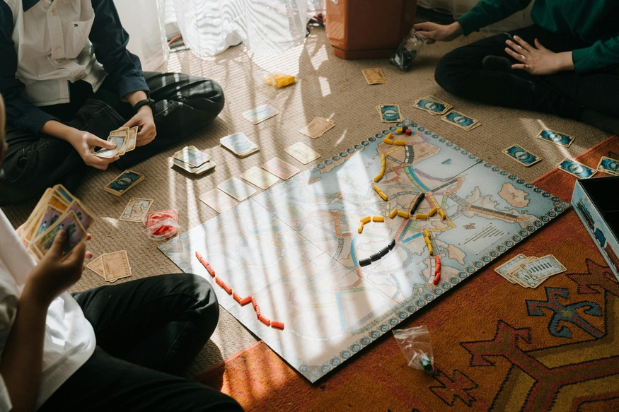

«Математика — это скучно», — часто слышу я от учеников. Но на самом деле она окружает нас везде: в музыке, архитектуре, играх и даже кулинарии. Задача родителя — показать, что математика может быть живой и увлекательной. Вот несколько способов пробудить искренний интерес.
1. Ищите математику в повседневной жизни
Когда вы готовите, спросите: «Как разделить пиццу поровну на четверых?» При походе в магазин — «Сколько сдачи мы должны получить?» На прогулке — «Какие геометрические фигуры ты видишь в зданиях?» Такие вопросы ненавязчиво тренируют навыки и показывают практическую пользу.
2. Настольные игры и головоломки
Многие настольные игры требуют счёта, стратегии и логики. «Монополия», «Каркассон», шахматы, судоку, «Сет» — всё это незаметно развивает математическое мышление. Выделите вечер для семейной игры — и польза, и общение.

3. Интересные факты и истории
Расскажите, что число π когда-то вычисляли с помощью многоугольников, а первая женщина-математик Гипатия жила в Александрии. Есть замечательные книги: «Математика для гуманитариев», «Живая математика» Перельмана. Короткая история за ужином может перевернуть отношение к предмету.
4. Онлайн-ресурсы и приложения
На моём сайте в разделе «Ученикам» вы найдёте подборку тренажёров и видеороликов. Особенно нравятся детям платформы с геймификацией: ЯКласс, Учи.ру, Khan Academy. Там можно соревноваться с одноклассниками или получать награды.
5. Проектная деятельность
Предложите ребёнку посчитать количество ступенек в подъезде, измерить площадь своей комнаты или составить бюджет на поездку. Когда математика помогает достичь реальной цели, интерес возрастает в разы.
6. Покажите свой интерес
Дети считывают отношение взрослых. Если вы говорите «я никогда не понимал математику», вы даёте разрешение не понимать её и ребёнку. Вместо этого удивляйтесь вместе: «Смотри, как ловко эта формула работает! Давай проверим!»
Математика — это не набор правил, а язык, на котором написана Вселенная. Помогите ребёнку услышать её красоту.